Firefly: Tables
Firefly tables have a variety of nice features, the most prominent
being the ability to sort and filter. If you also have Visualization capability installed, you
can overlay catalogs on images. If you also have plotting capability installed, you can make
plots of your table. One specific application of Firefly tables is
astronomical catalogs; see the catalogs
section.
Contents of page/chapter:
+Table Header
+Table Columns
+Adding Columns
+Table Filters
+Table Cells
+Saving Tables
+Table Actions
+Table Navigation
Firefly tables all have the same functionality, regardless of the
contents of the table. If it looks like a Firefly table, you can work
with it whether it is a catalog, an image header, a list of results,
etc.
If you have loaded a catalog into a tab and it doesn't take up the
whole screen, to see more of the window, grab the divider between the
two window panes and slide it up, or use the expand arrow icon ( ) to enlarge the window pane to take up the
whole window.
) to enlarge the window pane to take up the
whole window.
The table is shown exactly as it has been provided to the tool, with
all columns as defined by the creator of the table. To understand what
each column is, please see the documentation associated with that
catalog or table.
The tab (and table) name itself likely indicates its origin. To
remove the tab, it is likely that you can click on the "X" on the
tab.
Immediately below the tab name, there can be several symbols:
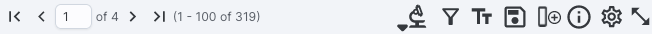
which we now describe,
going from left to right along the top of the catalog tab.
- Table navigation
- The first thing to notice is that only the first 100 rows of the
retrieved catalog are displayed in the table. In the example here,
there are 416 sources that were retrieved as a result of the search.
The left/right black arrows plus the page number allow you to navigate
among these 'pages' of 100 sources each. Note that the entire set of
results (not just the 100 rows you are currently viewing) can be sorted
by clicking on any column's name.
- Table action: Searches
- This launches a new search, and as such, it has its
own section
below.
 Filter
Filter
- Filters are complex and powerful enough that they are covered in a
separate section below.
- 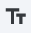 Table as text
- Clicking on this changes the table display into a text display.
The icon then changes to -- click this again
to return to the default table view.
 Save table
Save table
- This is how you can save the catalog. It has its own section below.
- Add a column
- This icon adds a new column to the table. This has its own section below.
 Info link
Info link
- You may or may not see this icon. This is an "information" button
and, if it exists, it may provide addtional information about the
table. It could have information about the job that was used to
retrieve it:
where the
direct link to the job is given there (and can be copied by clicking
on the clipboard, ready to be pasted into a helpdesk query, for
example), with a job id as shown. It could also just have information
about the table metadata:
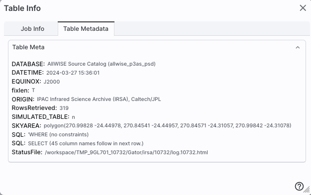
where the information about this
table includes information about the query that produced it.
- Table options
- Clicking on this icon brings up options for the table, e.g., how
many rows are displayed per page, which columns are shown, metadata
about each column if available, whether units and data types are shown
at the top of the column, shown here:
By default, it is often
but not always the case that all columns are shown. The default page
size is 100 rows. Note that expanding the page size to numbers much
greater than 100 may result in a substantial performance degradation
(e.g., your browser will appear to freeze or not appear to be doing
anything while it manages and renders the large table). See the Filters section below for more things to do from
the table options pop-up.
- Expand
- Clicking on this expands the catalog window pane to take up the
entire browser window. To return to the prior view, click on "Close"
in the upper left.
- Help
- The last option on the top of the catalog tab may be a
context-sensitive help marker, which should bring you to this online
help.
The table is shown exactly as it appears in the corresponding database
(or as it appeared on your disk), with all columns as defined for that
catalog. To understand what each column is, please see the
documentation associated with that catalog.
Depending on what you did to display a table, the columns that are
shown may be in easily-human-readable form, or may reflect column
names used within the individual catalog. Please consult the detailed
documentation associated with your specific archive if the headers are
not clear to you.
Clicking on the column names sorts the table by that column; clicking
once sorts in ascending order, clicking a second time sorts in
descending order, and clicking a third time returns the table to the
original order. Small arrows appear next to the column names to
remind you if the column is sorted in ascending or descending order.
When you do a single-position search on catalogs, two new columns
could be appended to the end of the catalog as it is returned to you.
These columns are:
- dist - the distance between the source in question and the
location you specified
- angle - the position angle between the target position you requested
and the object it found (degrees E of N)
When you do a multi-position search on catalogs, you could have
three new columns prepended to the catalog as it is returned to you.
These columns are :
- cntr_01 - the target position you requested
- dist_x - the distance between the target position you requested
and the object it found
- pang_x - the position angle between the target position you requested
and the object it found (degrees E of N)
These additional columns can help you assess if the target it found is
the target that should be matched to the position you requested.
It could be that, when you do a multi-position search on catalogs, you
have an option for "one-to-one matching". If that is selected, tne
line (and only one line) of output is included for each line of input.
It chooses the closest source within the radius you specify, or if
there is no match, it adds a line indicating no match.
Tips and Troubleshooting
- You can hide or display columns; click on the gears () to get to the table options, and tick the
box corresponding to the row you want to hide or show.
- If you are constructing your own catalog, the tool tries to guess
the formatting of the column based on the first row's values.
Therefore, if you have a value in the first row that happens to be a
string like "null" where the rest of the column isn't like that, or
happens to have only one decimal place where the rest of the column
has 2 or more, it will guess incorrectly and format the other rows
just like the first one. Try editing your catalog file to put the most
general case as the first row.
This icon allows you to add a new
column to your catalog. When you click on it, it brings up this pop-up
window:
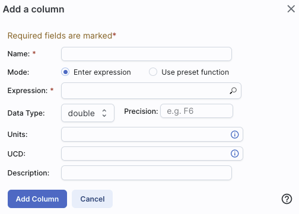
This window asks for:
- Name of the column (required) -- it cannot have special characters
like a minus sign or a percent symbol; you can only use letters,
numbers, and underscores.
- Mode "Enter expression" or "Use preset function" --
options immediately below this point correspond to "Enter expression"
options; the preset function options are lower below.
- Expression (required) -- using basic SQL operators, you can
manipulate columns to create the new column. (See more on this
below.)
- Data Type -- specify if your new column is a double
precision floating point ("double"), a long integer ("long"), or a
string ("char").
- Precision -- if you have selected "double" for data type,
select how many decimal places your new column should display. For
example, if you want the numbers to display as 1.23, enter "F2".
- Units -- specify the units of your new column. For more
information, see IVOA
documentation

- UCD, or unified content descriptor -- for VO compliance,
add this for your new column. For more
information, see IVOA
documentation
- Description -- add a description for your new column.
(This option appears for both modes.)
- Select a preset -- if you select "Use preset function",
you can choose (a) "set filtered rows to 'true' and the rest to 'false'",
(b) "set selected rows to 'true' and the rest to 'false'", or (c)
"number rows in current sort order". These options are useful for
tagging items you have selected in myriad ways (from plots, images,
complicated filters), or ordered in complicated ways.
In order to construct the expression for your new column, your input
should follow the syntax of an SQL expression. If you click on the
magnifying glass next to the form input, you get a pop-up window that
can help you construct an expression; click "apply" to apply the
expression.
You need to use the column names
exactly as they appear in your catalog.
Supported operators are: +, -, *, /, =, >, <, >=, <=, !=,
LIKE, IN, IS NULL, IS NOT NULL.
You may use functions as well; for a list of all available functions,
see here. Some examples include:
- "w3mpro" - "w4mpro"
- sqrt(power("w3sigmpro",2) + power("w4sigmpro",2))
- ("ra"-82.0158188)*cos(radians("dec"))
- "phot_g_mean_mag"-(5*log10(1000/"parallax") - 5)
Tips and Troubleshooting
- When you create a new column that is calculated from other
columns, it is created statically. That is, it is not dynamically
updated like a spreadsheet, but calculated once and left alone after
that.
- You can't delete columns as of this release, but you can hide
columns; click on the gears () to get to the table options, and tick the
box corresponding to the row you want to hide or show.
- When you create a new column, the header of the new column is red
to let you know that the column is not present in the original
catalog.
- When you save the catalog, the header of the saved catalog
indicates that you have added a column. When you load the catalog back
into the tool, the header of the new column is still red.
Filters are a very powerful way of exploring the table full
of search results. Click on this icon in
order to start the process of adding filters. A text entry box appears
above each of the current catalog columns, with a small version of the
filter icon corresponding to that row on the far left. You can type
operators and values in these boxes -- hit return after typing or
click in another box to implement the filter. For fields with a
limited set of choices, instead of a text entry box, a filter icon
will appear; click on it to select from the available choices.
Example: From a catalog, show only those sources
with declination above a certain value (say, 31 degrees), type ">
31" in the box above the "dec" column. Or, if you have retrieved a
WISE catalog and would like to only view the objects with a W1 (3.4
micron) profile-fitted magnitude less than 6 magnitudes, above the
'w1mpro' column, type "< 6" in the form.
For columns (fields) with a limited set of choices, instead
of a text entry box, an arrow next to the filter box will appear;
click on it to get a pulldown from which you can select the available
choices; to implement the filter, make the choices, and click "filter"
when you are done. Click "clear" in the pull-down menu to remove
that filter.
After you impose a filter, then the number of rows in the catalog is
restricted according to the rules you have specified, and the
"filters" icon on the top right of the catalog pane has changed to
remind you that there has been a filter applied, in this case just one
filter: 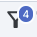. To clear the filters, click on
the cancel filters icon (which also appears after you impose filters):
 .
.
Filters can be used in combination. Note that the filters
between columns are logically "AND"ed together, but filters within the
same column can be logically "AND"ed or "OR"ed together; examples are
below.
The available logical operators are :
- = which means 'equal to' (exactly!), e.g., the parameter on
whichyou are querying (the column headers as shown) is exactly equal to
this value you are specifying.
- > which means 'greater than'
- < which mean 'less than'
- != which means 'not equal to' (exactly!)
- >= which means 'greater than or equal to'
- <= which means 'less than or equal to'
- IN which means 'included within this list', e.g., the parameter
on which you are querying is included within the list you are
specifying (if the column filter is free-form text, type
"value1,value2" and it will give you rows that have value1 or value2).
- LIKE which means 'resembles the text that is entered', e.g., the text
resembles the text that you type in the box.
- IS which effectively is the same as =
- IS NOT which effectively is the same as !=
Examples:
- Retain rows for which a certain parameter is not an empty
string: !=''
- Retain rows for which a certain parameter is not NULL and is
larger than 1.234: > 1.234 and IS NOT NULL
- Retain rows that have values between -0.5 and 1.25: > -05 and < 1.25
- Retain rows with a parameter greater than one value or exactly
not equal to another value: > 12345 or != 3000
- Retain rows with a parameter equal to one of the values in a list:
IN a,b,c,d
You can also select rows one at a time from the far left column and
then filter that down. Example: Search on anything. Select rows by
ticking the box on the left, say, every other row out of the first 12.
Click on the filter icon on the top of the column. The filter is
imposed to only include the 6 rows you selected.
You can also interactively impose filters from plots from a catalog - see the plots section.
Additionally, all the same operators that are available for making plots can be applied in filters - see the plots
section.
If you click on the table options icon (), you get a pop-up that includes a place
to filter columns. Here is an example of the tabe columns for a WISE
catalog that has been filtered to just have SNR>10 for each of the
four bands:
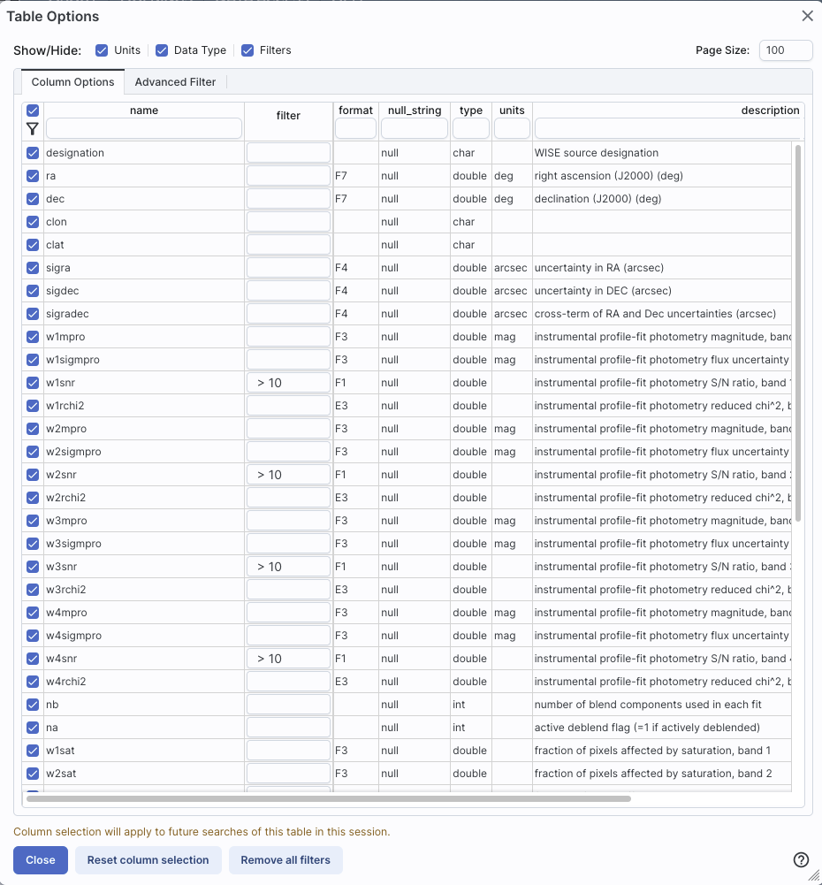
You can type in constraints in the filter box in much the same way as
you can from the catalog itself; note that the column description is
included here, which may make this way of setting filters more useful
when working with a new (to you) catalog.
The second tab is the advanced filter interface:
Here, the columns are listed alphabetically on the left, the
constraints you have imposed are in the "current constraints" box, and
you can apply additional SQL constraints via the free-form text box.
Hints for syntax are given below the entry box. This window can be
resized such that you can see the whole set of hints and imposed
filters. Note that in this interface, column headers must be enclosed
within double quotes.
Tips and Troubleshooting
- If you impose logically inconsistent restrictions such as
"exposure time > 160" and "exposure time < 100"
(">160;<100" in the filter box for the column marked "exposure
time"), no data will result, because no data are (can be) both less
than 160 seconds long and greater than 100 seconds long at the same
time. However, "exposure time > 160 or < 100" works just fine
(">160 or <100" in the filter box for the column marked
"exposure time").
- If you impose nonsensical filters (like using a letter where a
number should be, like "w1snr < f") then it will let you know that
something has gone really wrong, and let you go back to fix it.
- However, a filter like "ph_qual < f" could be valid -- if the
column with which you are working is a string, then a string is a valid
filter. It is case-insensitive. For the ph_qual column in the 2MASS
catalog, the values are always three letters, such as AAA or ABA or
CUU. A filter like "ph_qual < f" will operate as if you have
alphabetized the list. Any string that starts with A comes before F
and so will be retained. If you do "ph_qual < BBB" then AAA will be
left in, but so will "BAU", because alphabetically, BAU preceeds BBB.
- If you impose filters from a plot, it can manifest as several
filters on the catalog, e.g., one for each side of the square you have
drawn on the plot. If you want to remove, say, just one of the four
filters (rather than all of them by cancelling all filters), you can
do so from the table options pop-up.
- If you want to copy all of the "current constraints", even if the
entire field is not visible to you, you can triple-click with your
mouse to select the entire field, and then paste it into another
field or application to see what it is.
- If you are choosing filters in a table column from a list of
terms, cancelling those filters might not work the way it cavalierly
seems like it should. If a down arrow appears next to the filter box,
then a list of options you can select is available. Tick the boxes you
want, and click "filter" to apply the filter. Now, if you want to
change the filter, click the down arrow, select different options, and
click "filter" again to re-impose the new filter. To reset the filter,
you have to treat it like you would when applying a modified second
filter -- unselect the choices, or hit 'clear', and then hit
filter again. Hitting 'clear' and the 'x' doesn't work in
this context because 'x' means 'cancel without doing anything' as
opposed to 'impose the filter I just set'. When you are resetting the
filter to be 'select nothing', it is treating that as a new filter
setting, so you need to set up that filter and click 'filter' in order
for it to understand what you want.
Cancelling filters
After you impose a filter, then the "filters" icon on the top right of
the catalog pane has changed to remind you that there has been a
filter applied, in this case just one filter: To clear the filters, click on the
cancel filters icon (which also appears after you impose filters):
.
Some cell values may be too long for the cell space. If that is the
case, an ellipsis ("...") will appear in the cell as you mouse over
it:
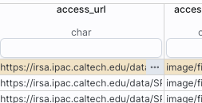
If you click on the ellipsis, you get a pull-down menu:
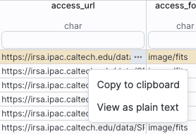 from which you can choose to copy the cell
value or view it in a pop-up window.
If you view it in a pop-up window, it will come up with no special
formatting:
If the
cell has a lot of information, it may help to impose simple
formatting, which it attempts to do if you tick the box "View with
formating":
Click on the diskette icon ( ), if
available, to save the table.
), if
available, to save the table.
You obtain this pop-up:
You have several choices to make. In order, they are:
- File format
- You can save the table in a variety of formats:
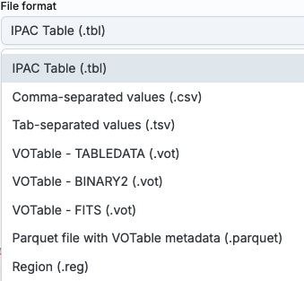
It defaults to saving it as an IPAC table file , which is basically ASCII text with headers
explaining the type of data in each column, separated by vertical
bars.
Other formats include comma-separated values (csv, suitable for, e.g.,
Excel), tab-separated values (tsv), and three different versions of VO tables .
- File name
- The tool tries to make a guess at a sensible filename. Feel free
to change it to something that makes sense to you.
- File location
- You may save your file to a local file (on your disk) or, if oyu
are logged in, in the IRSA Workspace .
- Modifications to the table
- Depending on what you have been doing to the table at this point,
you may have filtered or added columns. If you want to save the table as
it is currently displayed, with all filters as imposed and any columns
hidden, and any added columns as shown, select "Save table as
displayed." If you want to save the original table, with all rows and
the original columns intact, choose "Save table as originally
retrieved."
This icon implements a new search, an
'action', on the currently selected row of the table. When you click
on it, it reveals a pulldown:
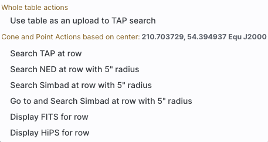
For this example, the selected row is 214.566030, +52.611039 in J2000
decimal degrees. From this pulldown, you can:
- Send the entire table to a TAP search
- Launch a TAP cone search at this position (more
information about TAP searches)
- Launch a NED search at this position with a 5 arcsecond radius (more
information about NED searches)
- Launch a Simbad search at this position with a 5 arcsecond radius, and
put the results in a table here in the tool
- Launch a Simbad search at this position with a 5 arcsecond radius, but
start another browser window or tab at Simbad with the results
- Launch a FITS search at this position (at IRSA, via this tool)
- Launch a HiPS search at this position (via this tool)
Any of these searches (except the search that launches another browser
window with the Simbad results) places the search results into this
same tool.
With the ability to extract
data from images comes the ability to rather quickly drown in
tables. There is a way to navigate among a lot of table tabs that have
accumulated.
This is probably best explained via an example. Here, I have tabs
showing that I have extracted several lines,
drills, and points from my images:
On the far right, I have a downward pointing arrow. When I click on
this, I get a pulldown:
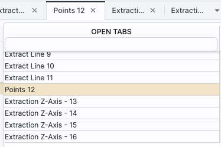
This pulldown shows that the tab marked "Points 14" is in the
foreground (it is shaded yellow) and it has a filter box at the top.
That filter box at the top works just like the filters discussed above, so if I want to find the tabs with the
extracted lines, I can type "line" in the box, and it will filter down
the list, leaving only those tabs with "line" in the name:
Then, from there, I can select the tab I want to bring to the
foreground. (When I select a tab to bring to the foreground, that tab
is also in the foreground for plotting.)
In this fashion, you can navigate among many tabs that are open at the
same time.